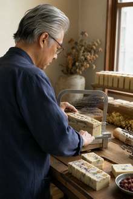
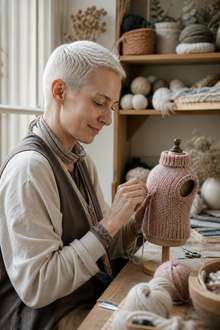
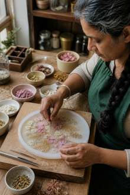
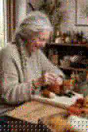
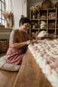

Fourteen artists, one creative home
About Velvet Charms
Velvet Charms is a collective of 14 artists working across different crafts and techniques. Art & Gifts brings those skills together through painting, sculpture, resin, clay, leather, accessories, felted work and keepsakes made with patience and attention to detail.
The same creative family also shapes Body Glow. The difference is the focus: here, the object itself becomes the story — a portrait, a pet-inspired miniature, a sculptural memory, a handmade bag, a decorative piece or a gift designed around one person.





Many skills, one commission
Because the studio combines several disciplines, a single idea does not have to live in only one material. A photograph can inspire a painting, a sculptural relief, a felted miniature, a resin keepsake or a coordinated gift set. When a request is completely new, we assess the best material, complexity, price and production time before work begins.
Orders & Payments
Orders are placed directly through our website and payments are processed securely through PayPal. Payment reserves your place in our production schedule; your production start and estimated dispatch window are then confirmed according to the current queue and the complexity of your order.
Contact
For commissions, questions or special requests, please use the Contact page. We usually respond within 1–2 business days.
Paisprezece artiști, un singur univers creativ
Despre Velvet Charms
Velvet Charms este un colectiv de 14 artiști care lucrează în tehnici și meșteșuguri diferite. Art & Gifts aduce aceste abilități împreună prin pictură, sculptură, rășină, lut, piele, accesorii, lână împâslită și obiecte-amintire realizate cu răbdare și atenție la detalii.
Aceeași familie creativă construiește și Body Glow. Diferența este accentul: aici, obiectul devine povestea — un portret, o miniatură inspirată de animalul tău, o amintire sculptată, o geantă lucrată manual, o piesă decorativă sau un cadou construit în jurul unei persoane.
Multe tehnici, o singură poveste
Pentru că studioul reunește mai multe discipline, aceeași idee nu trebuie să existe într-un singur material. O fotografie poate inspira o pictură, un relief sculptural, o miniatură împâslită, un obiect din rășină sau un set cadou coordonat. Pentru cererile complet noi stabilim înainte materialul potrivit, complexitatea, prețul și timpul de realizare.
Comenzi & Plăți
Comenzile se plasează direct pe site, iar plata este procesată în siguranță prin PayPal. Plata rezervă locul în programul nostru de producție; apoi confirmăm data de început și intervalul estimat de expediere în funcție de coada actuală și complexitatea comenzii.
Contact
Pentru comenzi personalizate, întrebări sau cereri speciale, folosește pagina de Contact. Răspundem de regulă în 1–2 zile lucrătoare.